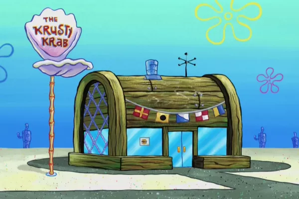
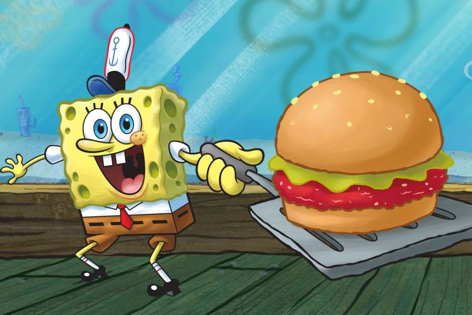

Siri cascudo é o restaurante mais conhecio da Fenda do bikini. O proprietário é o ganancioso Siringuejo

O famoso hambúrguer de siri empanado crocante, com queijos
Pão de farinha de coral
Maionese de lagostin
Queijo de cavlo marinho
Salada de algas
Hambúguer de siri
Molo especial da casa

Alameda das Conchas, 303 - Mar Profundo
TEL:+ 55 (14)9998,7766
Ter, Qua, e Quinta 11h - 18h
Sexta e Sabado 11h - 23h